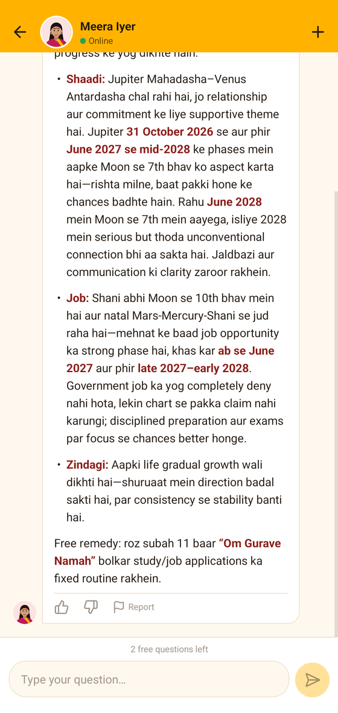
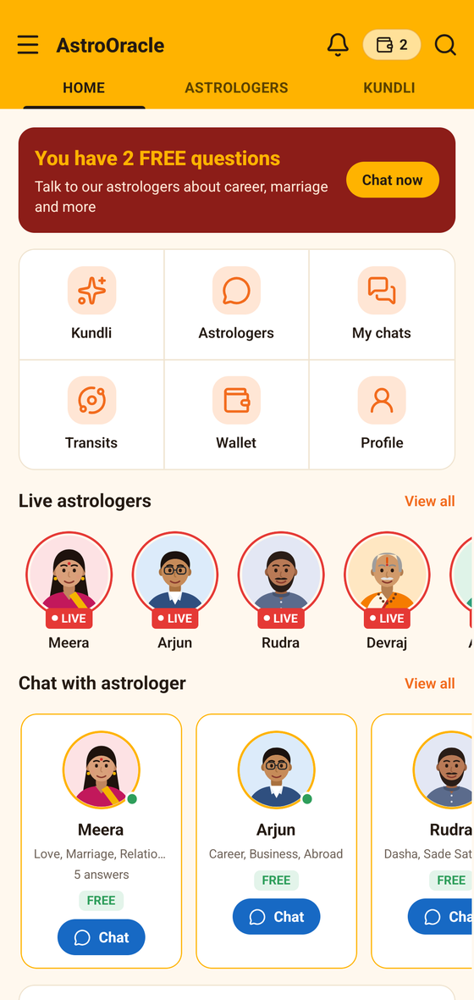
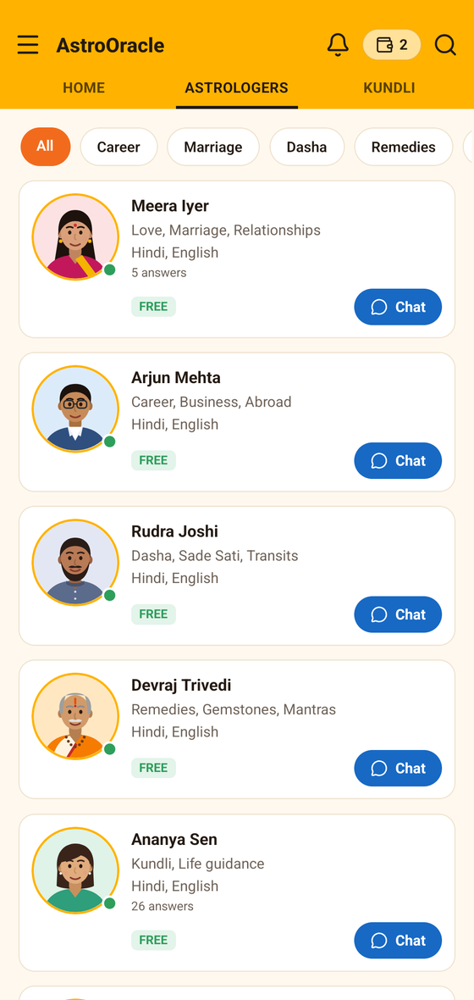

Marriage, career, money, timing — ask anything and get an answer built from your own birth chart: the sidereal zodiac, the dasha you are running, and today's real transits. No appointment, no waiting room, no hurry.

Your chart is cast once. Every answer after that stands on it.
Date, place and time of birth. Don't know the time? The reading is cast from your Moon sign and says so plainly, instead of quietly guessing.
Each one reads a different corner of life — marriage, career, dashas, remedies, family. The same calculations, seen through different eyes.
Type in English, Hindi or Hinglish. The reply starts in a second or two, with the chart reasons written out, not just a verdict.
Real calculations, plain language, and nothing invented about you.


Sun-sign predictions are written for a twelfth of the world. Yours is written for your chart.
The sidereal zodiac with the Lahiri ayanamsha, Navamsa (D9) and Dashamsha (D10), Vimshottari dasha and antardasha to the second, and today's real transits.
Dignities, house lords, aspects and yogas follow the Parashari rules a Jyotishi studies for years — and every answer names the factors it rests on.
Periods and seasons tied to your running dasha and the transits ahead. Never a lucky day pulled out of the air.
A mantra, a fast, an act of service first. Gemstones only where the chart supports them, always with the advice to confirm before buying.
Write in English, Hindi or Hinglish — the answer comes back the same way, with Jyotish terms explained the first time they appear.
No death predictions, no fear used to push a decision, no diagnosis. A hard period is named gently, along with what helps.
Every astrologer in AstroOracle is our AI, reading the chart our engine casts from your birth details — awake at any hour, with no queue and no rush. More join as we grow.
Timing, compatibility, family expectations, and the doshas people worry about.
Job changes, promotions, government service, business versus salary, going abroad.
Which period you are running, what it favours, and when the weight lifts.
Mantras, charity, fasting and puja first; gemstones only when the chart supports them.
For anything that doesn't fit a box — a full reading of the chart as it stands today.
Education, children and family are already in the app, and the list keeps growing.
Anything a Jyotishi would be asked, in the words you would use.
AstroOracle's AI astrologers. Your chart is calculated by our own Jyotish engine, and the astrologer you picked reads it and writes the answer in your language. Ask one directly whether it is an AI and it will tell you.
Yes. The reading is then cast from your Moon sign, houses are counted from there, and every answer says so rather than pretending to a precision it doesn't have.
Vedic (Jyotish): the sidereal zodiac with the Lahiri ayanamsha, whole-sign houses, Vimshottari dasha, the D9 and D10 divisional charts, and real daily transits.
No. It will not predict death or lifespan, will not diagnose or prescribe, and never predicts the sex of an unborn child. For any symptom, please see a doctor.
They are stored to calculate your chart and answer your questions, and nothing else — no selling, no advertising. See the privacy policy.
It can. Every answer has thumbs up, thumbs down and a report button; those reports reach us and shape what comes next. If an answer is broken and it's our fault, we put the question back.
The app is in testing. Write to us and we'll send the link the day it opens, along with your three free questions.